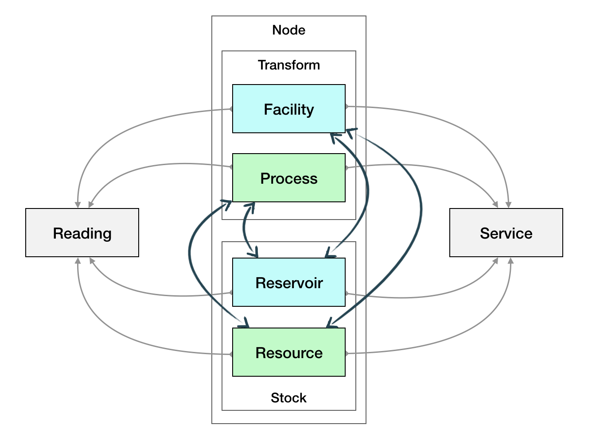

The Totality Ontology
Unapologetic Lumping
Splitters make very small units – their critics say that if they can tell two animals apart, they place them in different genera…and if they cannot tell them apart, they place them in different species. Lumpers make large units – their critics say that if a carnivore is neither a dog nor a bear, they call it a cat.
– George Simpson, “The Principles of Classification and a Classification of Mammals”
Totality is unabashedly a lumping enterprise. While it is necessary to draw some distinctions in the world (and to maintain enough information to allow downstream users to make finer distinctions as required by their application), Totality itself aims to make do with as few concepts and categories as it can.
This dictated by aesthetic concerns, to be sure, but also by practical constraints: as a massively multiplayer platform, Totality must be legible to people of many different backgrounds and motivations. Every additional complexity in its external face will reduce the number who are willing and able to engage with it - whether as contributors or consumers.
The concepts and entities explained here therefore constitute the minimal set that is capable of representing the natural and man-made world without truly ugly contortions.

Nodes
Totality divides the whole world into just a few basic categories, together referred to as nodes. These are divided along two dimensions: whether the node is man-made or naturally occurring, and whether it represents a quantity at rest (a stock), or a process of transformation from one or more quantities to others.
| Nodes | Engineered | Naturally Occurring |
|---|---|---|
| Stock | Reservoir | Resource |
| Transformer | Facility | Process |
There are many other thing to know about nodes, and Totality does allow for quite a bit of detail to be included, but these are the basic forms that items take.
-
A reservoir is a vessel that can accommodate a stock of a material, substance, energy, populations of animals, or even human beings.
-
A resource is a collection of minerals, timber, water, or an ecosystem or other configuration of the natural world - any aspect of the planet that might be assigned value of any sort.
-
A facility is any human-made location that serves any purpose, whether material transformation or refinement, life-supporting, recreational, or spiritual.
-
A process is any physical, chemical, or biological change to takes place under natural conditions.
One of the core tenets of Totality is that attempts to segregate human civilization and economic activity from the natural environment is misguided and harmful. It may seem strange, then, that the natural / engineered distinction is so prominent in our ontology. And it is indeed the case that some nodes are ambiguous. Is a large suburban park comprising many acres of forest better represented as a natural resource or a human-engineered and -managed facility?
While these dividing lines are not unimportant, it is also important to keep in mind that Totality takes the complexity of the built and natural worlds in stride. Rather than trying to account for each difficult case, the system relies on emergent conventions and collaborative practices to arrive at satisficing solutions.
Services
Every node can be described in terms of the services it provides, or is capable of providing.
Readings
While the various node types and their relationships are the essential underpinning of Totality’s view of the world, it is our ongoing observations of these nodes that generates planetary-scale perceptions. Reading
Transportation
A key aspect of the planetary system is that people, animals, materials, products, and energy move from one place to another, both as a result of natural processes and due to intentional human efforts. These transport processes cover everything from intermodal container shipping to seasonal freshwater flows from snowpack to eventual outflows. These phenomena are represented using the conveyance and route types.